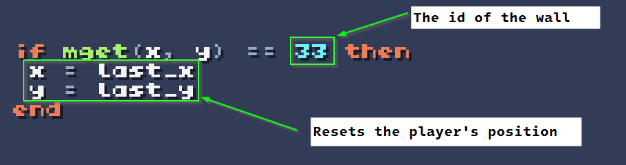

Locked Door Challenge
Return to Challenge Description
Part 1: Adding Doors
In this challenge, you will add code that prevents your player from moving through doors.
Requirements
- Add at least one door to your maze
- When the player attempts to move through the door they are stopped
Note: Your message should be specific to your game. If your "door" is a destructible crate or a closed portal, feel free to adjust the message to meet your theme.
When you have completed it, your project should work similar to the one below:
Hints
Doors are Walls
For this part of the challenge, you can treat doors as though they are walls. Below is the code that is used to prevent the player from moving through a wall tile:
What's Next:
With locked doors in your maze, you are one step closer to being able to create interesting puzzles. In the next Part, you will be challenged to write code that not only detects when a player steps on a key, but will keep track of the number of keys the player has collected.